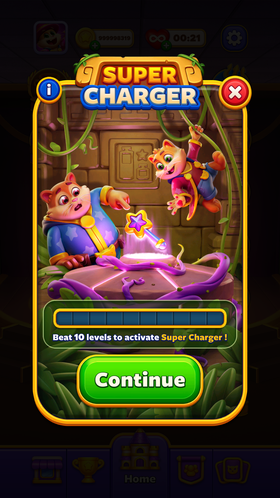

Super Charger (trợ thủ nạp năng lượng)
Cho người chơi một nhịp chuẩn bị rồi bùng nổ trong bàn, tách điều kiện mở trợ thủ ngoài Home với năng lượng cho từng lần sử dụng. Chiến lược BestSort và chai có charge có cơ chế kích khác nhau, nên không mô tả mọi biến thể như một nút bấm.
Chưa có case chính trong hai lượt review 15–16/11. Nội dung theo mã/config; ảnh ngữ cảnh không được tính thành playtest tính năng. Xem bằng chứng và phần còn thiếu.
Thiết kế chi tiết
Tóm tắt thiết kế
Cho người chơi một nhịp chuẩn bị rồi bùng nổ trong bàn, tách điều kiện mở trợ thủ ngoài Home với năng lượng cho từng lần sử dụng. Chiến lược BestSort và chai có charge có cơ chế kích khác nhau, nên không mô tả mọi biến thể như một nút bấm.
Đủ gate ngoài Home → đạt Progress → vào bàn → nạp theo luật → ready → bấm hoặc tự dùng theo type → lấy goal lần kế → kết quả lượt giữ/reset quyền.
Diễn giải thiết kế từ GDD, metadata và nguồn đã đối chiếu. Outcome là expected; chỉ câu ghi round2 là actual của fixture 0.0.3129. Mã native 0.0.3063, default APK 0.0.3129 và cache lịch sử có phạm vi riêng. Không có playtest mới trong lượt biên tập.
2 ảnh chụp có nguồn · ảnh hiện ngay trong khung, bấm để mở ảnh gốc. Màu nhãn phân biệt playtest, lịch sử và ngữ cảnh.


Luồng người chơi từng bước
- 01
Kiểm quyền ngoài Home
ClientĐọc IsEnabled, mốc level và Progress mục tiêu.
Điều kiện / luật: Default Type = 2 (BestSort), IsEnabled = false, FirstLevelToShow = 5, TargetLevelProgress = 0. Code 0.0.3063 nếu FirstLevelToShow < 5 thì dùng 10. Không biến target 0 thành cam kết mọi user bật ngay.
Kết quả theo đặc tả: IsEligible và IsActive được tính riêng.
- 02
Giới thiệu và tích tiến độ
Người chơi và clientXem Join/Info rồi thắng để đạt mục tiêu khi cần.
Điều kiện / luật: EventShownInLifeTime và Progress có gate; popup reason có Tutorial/Activate/Lose.
Kết quả theo đặc tả: Khi đủ mục tiêu, chuẩn bị thông báo kích hoạt trong bàn.
Nguồn: SuperCharger.json · use_cases/2 · SuperCharger.json · use_cases/3 · SuperCharger.json · use_cases/4 · local_code_gap_results_20261115.json · MS-CODE-65 · local_code_gap_results_20261115.json · MS-CODE-66 · core_body_gap_decisions_20261115.json · MS-CORE-BODY-15 · SuperCharger.json · use_cases/12 - 03
Khởi tạo năng lượng của lượt
ClientVào bàn với trợ thủ active.
Điều kiện / luật: Initialize đặt useCount = 0 và goal theo ChargeMatchCount[0]. ShouldHaveInitialCharge có thể đặt goal = 0, là cờ riêng với trạng thái active.
Kết quả theo đặc tả: Có trợ thủ không nhất thiết có một lần dùng đầy sẵn.
- 04
Nạp theo nước đi
Người chơiThực hiện các selection phù hợp khi ChargeWithMove bật.
Điều kiện / luật: CheckMoveIsRepetitive 0.0.3063 đọc state hiện tại của nguồn/đích, không đọc lịch sử qua-lại; một số chuyển dịch dư thừa bị loại.
Kết quả theo đặc tả: Không phải mọi tap hoặc mọi nước qua-lại đều cho năng lượng.
- 05
Nạp theo hoàn thành chai
Người chơiHoàn tất chai khi ChargeWithMove tắt.
Điều kiện / luật: CountsTowardCharge ghi màu đã tính để không cộng lại cùng màu trong phạm vi source; goal giảm theo nhánh hợp lệ.
Kết quả theo đặc tả: Nút chuyển Ready khi remainingGoal <= 0.
- 06
Dùng BestSort bằng nút
Người chơiBấm nút Ready của chiến lược BestSort.
Điều kiện / luật: TargetFinder chọn ứng viên theo cap và quyền item; Solver có 5 pha. Tên BestSort không chứng minh nghiệm tối ưu toàn cục của puzzle.
Kết quả theo đặc tả: Áp solution được strategy tạo và chạy chuỗi hiệu ứng.
- 07
Kiểm bàn sau solution
ClientSau hiệu ứng, kiểm completed bottle và khả năng kẹt.
Điều kiện / luật: Có TryRescueFromStuck thêm chai trong nhánh phù hợp và ghi cờ addedBottleForStuck.
Kết quả theo đặc tả: Cần phân biệt hiệu ứng chính với chai cứu kẹt; không hứa luôn giải xong.
- 08
Dùng chai có charge tự động
ClientKhi Type = 1 và strategy cho phép, áp ChargeableBottle.
Điều kiện / luật: ShouldUseAutomatically trả true ở nhánh này; không yêu cầu mọi type phải đợi người chơi bấm cùng một nút.
Kết quả theo đặc tả: Chai mini được tạo/nạp theo lifecycle của strategy.
- 09
Nạp cho lần sử dụng sau
Client và người chơiTiếp tục bàn sau lần dùng trước.
Điều kiện / luật: IncreaseSuperChargerUseCount tăng index và kẹp vào phần tử cuối ChargeMatchCount; không cộng dồn toàn bộ list.
Kết quả theo đặc tả: Goal mới đúng lần dùng; hết list thì lặp giá trị cuối.
- 10
Kết lượt, cảnh báo và bù lỗi
Người chơi và clientHủy hoặc xác nhận thoát; khi thua, theo reset và lưu model.
Điều kiện / luật: Quyền Home, charge trong lượt và gói Compensation là các trạng thái riêng; có API bù không chứng minh người chơi được bù tự động mọi lỗi. Khi thắng có CompleteSuperChargerTargetProgress theo caller; đây khác bước nạp cho lần dùng trong bàn.
Kết quả theo đặc tả: Không giữ sai một charge hoặc grant bù chỉ vì đóng popup.
Nguồn: SuperCharger.json · use_cases/13 · SuperCharger.json · use_cases/14 · SuperCharger.json · use_cases/17 · SuperCharger.json · use_cases/18 · local_code_gap_results_20261115.json · MS-CODE-65 · local_code_gap_results_20261115.json · MS-CODE-66 · core_body_gap_decisions_20261115.json · MS-CORE-BODY-15 · SuperCharger.json · use_cases/15
Quy tắc cần nắm
| Quy tắc | Hành vi theo nguồn | Căn cứ |
|---|---|---|
| Hai thước tiến độ | Progress ở Home mở quyền; remainingGoal và useCount trong bàn đo năng lượng. Không thể dùng cùng một con số để giải thích cả hai. | |
| List goal không phải tổng cần tích | ChargeMatchCount[0] dùng cho lần đầu; index lần dùng tăng và clamp. Default [1] không chứng minh chỉ dùng một lần toàn level. | |
| Repetitive không có nghĩa đọc history | Predicate lịch sử loại nguồn một màu sang chai trống trong một số gate, nguồn height = 1 trừ blocker 9 hoặc đích thiếu capacity. Không phải lọc Undo hay phát hiện lặp N nước. | |
| Heuristic có phần biết và chưa biết | RandomReverse kiểm số màu > 1 và Random.Range(0,2) == 0 trước reverse trong source 0.0.3063. Đây là 1/2 ở nhánh đủ gate, không phải xác suất mọi solution bị đảo. | |
| Cap có ngữ cảnh | BestSortMaxEffectedBottleCap 4 và bảng theo candidatecount là default source; chưa bảo đảm mọi lần dùng tác động đúng 4 chai hoặc không có override. |
Số liệu & phần thưởng
Phần thưởng
HAI BIẾN THỂ SUPER CHARGER (enum SuperChargerType)
| Mã | Biến thể | Hiệu quả khi dùng |
|---|---|---|
| 0 | None | Tắt tính năng |
| 1 | ChargeableBottle | Tạo hoặc nạp một chai mini dùng được một lần tự kích hoạt không cần bấm |
| 2 | BestSort (mặc định) | Áp solution heuristic lên tập chai hợp lệ cap mặc định 4 xử lý completion và nhánh thêm chai cứu theo gate sau hiệu ứng. Không bảo đảm giải xong toàn bàn. |
CẤU HÌNH MẶC ĐỊNH (SuperChargerConfigModel.json, client default)
| Khoá | Giá trị | Ý nghĩa |
|---|---|---|
| IsEnabled | false | Tắt mặc định server bật |
| Type | 2 (BestSort) | Biến thể phép thuật |
| FirstLevelToShow | 5 | Level tối thiểu nếu cấu hình < 5 thì code dùng 10 |
| TargetLevelProgress | 0 | Số level phải thắng để kích hoạt |
| ChargeWithMove | false | Nạp theo chai hoàn thành thay vì theo nước đi |
| CanIncreaseHealth | false | Cho phép tăng dung tích chai (biến thể ChargeableBottle) |
| ShouldHaveInitialCharge | false | Không nạp sẵn đầy đầu ván |
| ChargeMatchCount | [1] | Số lần match hoặc chai cần cho mỗi nấc nạp |
| BestSortMaxEffectedBottleCap | 4 | Số chai tối đa BestSort được động vào |
| BestSortBottleCapByCandidateCount | {"7": 4} | Có 7 chai ứng viên thì giới hạn tác động 4 chai |
NĂM PHA CỦA BESTSORTSOLVER
| Thứ tự | Pha | Vai trò |
|---|---|---|
| 1 | TagBottom | Xử lý đáy chai theo thẻ màu |
| 2 | CompleteFill | Hoàn thành các chai gần đủ (CompleteFillCount = 4) |
| 3 | TopColor | Gom theo màu ở lớp trên cùng |
| 4 | BestFit | Ghép tối ưu phần còn lại (heuristic không có hằng số) |
| 5 | RandomReverse | Với solution đủ điều kiện và hơn1color Random.Range(0 2)==0 thì Reverse một trong hai outcome (mã0.0.3063). |
TRẠNG THÁI VÀ NGUỒN MỞ POPUP
| Enum | Giá trị | Ý nghĩa |
|---|---|---|
| ChargerStatus | Active=0, Passive=1, Lost=2, Activated=3 | Trạng thái báo về analytics |
| ChargerContext | level_start=0, level_end=1 | Thời điểm báo trạng thái |
| SuperChargerJoinPopupReason | Lose=0, Activate=1, Tutorial=2 | Lý do mở join popup |
| SuperChargerInfoPopUpImpressionSource | InfoButton=0, FirstOpen=1 | Nguồn mở popup hướng dẫn |
| SuperChargerJoinPopUpImpressionSource | LobbyIcon=0, FirstOpen=1 | Nguồn mở join popup |
Phần thưởng theo code
| Ngữ cảnh | Phần thưởng | Evidence |
|---|---|---|
| Dùng Super Charger (BestSort) | Sắp xếp lại tới BestSortMaxEffectedBottleCap chai hoàn thành ngay các chai đủ 4 đơn vị cùng màu thêm 1 chai cứu nếu bàn kẹt | BestSortSolver.Solve; BestSortSuperChargerStrategy.ApplySolutions; BestSortSuperChargerStrategy.TryRescueFromStuck |
| Dùng Super Charger (ChargeableBottle) | Tạo/nạp một chai mini dùng được một lần | ChargeableBottleSuperChargerStrategy.Use; SuperChargerBottleTutorialDescription2 |
Số liệu chính
| Chỉ số | Giá trị | Nguồn |
|---|---|---|
| Bật mặc định (client) | false | SuperChargerConfigModel.json: IsEnabled |
| Biến thể mặc định | Type = 2 (BestSort) | SuperChargerConfigModel.json: Type |
| Level tối thiểu | 5 (dưới 5 thì code dùng 10) | SuperChargerConfigModel.json: FirstLevelToShow |
| Tiến độ mục tiêu | 0 | SuperChargerConfigModel.json: TargetLevelProgress |
| Nạp theo nước đi | false (nạp theo chai hoàn thành) | SuperChargerConfigModel.json: ChargeWithMove |
| Cho tăng dung tích chai | false | SuperChargerConfigModel.json: CanIncreaseHealth |
| Nạp sẵn đầu ván | false | SuperChargerConfigModel.json: ShouldHaveInitialCharge |
| Số lần cần cho mỗi nấc nạp | [1] | SuperChargerConfigModel.json: ChargeMatchCount |
| Số chai tối đa BestSort tác động | 4 | SuperChargerConfigModel.json: BestSortMaxEffectedBottleCap |
| Giới hạn theo số chai ứng viên | {"7": 4} | SuperChargerConfigModel.json: BestSortBottleCapByCandidateCount |
| Số đơn vị nước để chai đầy | 4 | BestSortSolver.CompleteFillCount |
| Giới hạn chai mặc định của BestSort | 4 | BestSortTargetFinder.DefaultBestSortBottleCap |
| Số pha của BestSortSolver | 5 | BestSortSolver.Solve |
| Số biến thể SuperChargerType | 3 (None=0, ChargeableBottle=1, BestSort=2) | SuperChargerType |
| Chiều dài thanh tiến độ trong level | 1.165 (đơn vị world) | InLevelSuperChargerView._fullDistance |
| Layer animator của nút | 0 | SuperChargerButtonInnerView.AnimatorBaseLayer |
| Số trạng thái ChargerStatus | 4 (Active=0, Passive=1, Lost=2, Activated=3) | ChargerStatus |
| Số lý do mở join popup | 3 (Lose=0, Activate=1, Tutorial=2) | SuperChargerJoinPopupReason |
| Số điểm vào tính năng | 6 | SuperCharger.entry_points |
| Số sự kiện analytics | 6 | SuperCharger.analytics |
| Tên khối đồng bộ | "SuperChargerModel" | SuperChargerDataService |
| Số trường của SuperChargerModel | 7 | SuperChargerModel |
Các quyết định trong luồng
| Tình huống | Cách xử lý theo nguồn | Căn cứ |
|---|---|---|
| Vì sao tách active và initial charge? | Một điều kiện quyết định có trợ thủ, điều kiện kia quyết định có thể dùng ngay khi vào bàn. Trộn chúng khiến người chơi hiểu sai khi nút chưa đầy. | Eligibility, Initialize và TryApplyInitialCharge. |
| Có thể gọi BestSort là nút thắng ngay không? | Không. Nó áp heuristic lên tập ứng viên có giới hạn rồi còn kiểm stuck; tên strategy không chứng minh luôn tìm lời giải toàn bàn. | BestSortSolver/TargetFinder và rescue branch. |
| Goal tăng bằng cách nào? | Theo danh sách goal của từng lần dùng, kẹp vào phần tử cuối; không phải công thức cộng tất cả giá trị trước đó. | MS-CODE-65, code 0.0.3063. |
Nhánh lỗi và phục hồi
| Điều kiện | Hành vi mong đợi | Phạm vi đã kiểm |
|---|---|---|
| Dùng xong vẫn kẹt | Theo TryRescueFromStuck và kiểm lại; không coi việc gọi helper là một runtime recovery đã pass. | Theo code/dossier có build; chưa chạy recovery trợ thủ trên thiết bị trong lượt này. |
| Config hết list goal hoặc thiếu ứng viên | Dùng clamp ở list hợp lệ; dữ liệu rỗng/strategy không tạo được vẫn cần xử lý đúng gate, không tự lấy goal = 0 đểgrant. | Theo code/dossier có build; chưa chạy recovery trợ thủ trên thiết bị trong lượt này. |
| Thua hoặc đổi eligibility khi mở app | Đọc reset của service và model; không dùng cold restart Home 353 để chứng minh charge trợ thủpersist. | Theo code/dossier có build; chưa chạy recovery trợ thủ trên thiết bị trong lượt này. |
Nhận định & vận dụng
Một điều kiện quyết định có trợ thủ, điều kiện kia quyết định có thể dùng ngay khi vào bàn. Trộn chúng khiến người chơi hiểu sai khi nút chưa đầy.
Eligibility, Initialize và TryApplyInitialCharge.
Không. Nó áp heuristic lên tập ứng viên có giới hạn rồi còn kiểm stuck; tên strategy không chứng minh luôn tìm lời giải toàn bàn.
BestSortSolver/TargetFinder và rescue branch.
Theo danh sách goal của từng lần dùng, kẹp vào phần tử cuối; không phải công thức cộng tất cả giá trị trước đó.
MS-CODE-65, code 0.0.3063.
Ảnh chụp bổ sung & nguồn bằng chứng
Không coi ảnh lịch sử hoặc ảnh ép bật bằng fixture là trạng thái production hiện tại.
Toàn bộ ảnh đã được đặt ở phần tóm tắt và các bước phía trên.
Case đầy đủ: expected, actual và ledger · Ảnh lịch sử và tài nguyên gốc
Tổng quan & điều kiện mở
Mô tả
- Super Charger là trợ thủ dùng trong level: người chơi phải thắng đủ số level ở Home để kích hoạt nó.
- Trong mỗi ván có một nút Super Charger nạp dần theo tiến trình chơi — theo số nước đi hoặc theo số chai hoàn thành, tuỳ cấu hình.
- Khi đủ năng lượng, BestSort chờ nút dùng; ChargeableBottle có ShouldUseAutomatically. Hai nhánh không dùng cùng một điều kiện bấm.
- BestSort (Type = 2 mặc định) chọn một tập chai theo cap và chạy heuristic; không chứng minh sắp xếp tối ưu toàn bộ puzzle.
- Biến thể ChargeableBottle (Type = 1) tạo hoặc nạp một chai mini đặc biệt trên bàn, dùng tự động.
- Trạng thái kích hoạt là 'sống đến khi thua': thua một ván là mất Super Charger và phải làm lại tiến độ.
- Game có popup Are You Sure cảnh báo trước khi người chơi bỏ ván để không mất trợ thủ.
- BestSort giới hạn tối đa 4 chai bị tác động (BestSortMaxEffectedBottleCap).
- Toàn bộ tính năng do khoá remote config SuperChargerConfigModel điều khiển, mặc định client là tắt.
Mở khóa & điểm vào
SuperChargerService.IsEligible(): cần SuperChargerConfigModel.IsEnabled = true và tiến độ người chơi ≥ FirstLevelToShow; trong code có bước kẹp: nếu FirstLevelToShow < 5 thì dùng 10 thay thế (chống cấu hình sai). Mặc định client FirstLevelToShow = 5, IsEnabled = false. IsActive() còn đòi tiến độ tích luỹ Progress ≥ TargetLevelProgress.
Điểm vào:
- Icon Super Charger ở Home (SuperChargerService.IsLobbyIconVisible → SuperChargerJoinPopUp, impression source LobbyIcon)
- SuperChargerJoinPopUp tự bật khi về Home (TryShowSuperChargerPopUpOnLobbyReturnCommand — lệnh thứ 2 trong chuỗi return-to-home)
- SuperChargerActivationPopUp khi vừa đủ tiến độ (TryPlaySuperChargerActivationCommand)
- Nút info trong join popup → SuperChargerInfoPopUp (impression source InfoButton hoặc FirstOpen)
- Trong level: InLevelSuperChargerView (thanh tiến độ) và nút SuperChargerButtonUI
- Popup Are You Sure khi định thoát/bỏ ván (SuperChargerAreYouSureContainer)
Luồng chi tiết theo nguồn
Cách hoạt động
- Ở Home, mỗi lần thắng level SuperChargerService.TryIncreaseProgress() tăng SuperChargerModel.Progress thêm 1 (chỉ khi EventShownInLifeTime đã bật).
- Khi Progress == TargetLevelProgress, service bật cờ ShouldShowInLevelActivationPopUp để lần vào level kế tiếp báo 'Super Charger đã sẵn sàng'.
- Lần đầu đủ điều kiện, ShouldAutoOpenPopUp() trả true (EventShownInLifeTime còn false) nên mở SuperChargerJoinPopUp.
- Lý do mở popup lấy từ GetJoinPopupShowReason: Activate(1) nếu đã đủ tiến độ, Tutorial(2) nếu chưa, Lose(0) sau khi mất; popup gọi MarkEventShownInLifeTime và MarkJoinPopUpShown.
- SuperChargerProgressView vẽ thanh tiến độ có vạch ngăn, dùng chữ SuperChargerJoinProgressText khi chưa xong và SuperChargerIsActiveText khi đã kích hoạt.
- Vào level: Initialize đọc ChargeMatchCount, reset useCount0 và lấy remainingGoal=ChargeMatchCount[0] khi strategy tạo được. Sau mỗi lần dùng, index=min(useCount+1,Count−1), lấy goal của index đó; phần tử cuối được dùng lại (mã0.0.3063).
- SuperChargerStrategyFactory.Create(configModel) tạo chiến lược tương ứng; SuperChargerButtonUI.Initialize chọn view theo SuperChargerType.
- CheckMoveIsRepetitive chỉ đọc state hiện tại: reject khi (origin water list.Count==1 && target empty && !origin.HasBlocker(9)) OR (origin.Height==1 && !origin.HasBlocker(9)) OR target.EmptyCellCount<origin.TopWaterHeight. Không đọc SelectionSystem/history và không có history-depth N trong body; không được diễn giải thành undo/qua-lại filter. (Mã0.0.3063; chưa xác nhận runtime0.0.3129.)
- Nạp theo chai (ChargeWithMove = false): mỗi OnAnyBottleCompleted trừ 1, danh sách _completedColors bảo đảm mỗi màu chỉ tính một lần.
- Khi _remainingGoal <= 0, nút chuyển trạng thái Ready (SuperChargerButtonInnerView.OnReady, hoạt ảnh readyClip kèm particle).
- Với type ChargeableBottle, hệ thống tự kích hoạt và tạo hoặc nạp ChargeableBottleItem trên bàn.
- Với type BestSort, người chơi bấm nút (OnUseChargerButtonClicked) → UseSuperCharger() → strategy.Use(source).
- BestSortTargetFinder.FindSuitableTargets chọn tập chai ứng viên, giới hạn theo BestSortBottleCapByCandidateCount ({"7": 4}) và BestSortMaxEffectedBottleCap (4).
- BestSortSolver.Solve chạy 5 pha theo thứ tự TagBottom → CompleteFill → TopColor → BestFit → RandomReverse để dựng BestSortSolution gồm danh sách BottleSolution.
- PlaySuperChargerSequence bắn trail particle từ nút tới các chai đích (SuperChargerTrailAnimationController), rồi ApplySolutions ghi lại nội dung chai.
- UnlockCompletedBottles mở khoá chai đã hoàn thành (đủ 4 đơn vị cùng màu) và CompleteOverBoardItemsOnEmptiedCells xử lý vật thể phủ trên ô vừa trống.
- FinishCharge kiểm tra IsBoardStuck; bàn kẹt thì TryRescueFromStuck thêm một chai cứu và ghi nhận vào analytics.
- Kết thúc ván: thắng thì CompleteSuperChargerTargetProgress; thua thì trạng thái ChargerStatus.Lost và tiến độ bị reset qua TryResetProgress.
- Khi mở app, InitializeData → TryResetProgress(onAppLaunch: true) dọn tiến độ nếu người chơi không còn đủ điều kiện.
Luồng chi tiết theo code
Ở Home: mỗi lần thắng level, SuperChargerService.TryIncreaseProgress() tăng SuperChargerModel.Progress thêm 1 (chỉ khi EventShownInLifeTime đã bật và Progress chưa chạm TargetLevelProgress). Khi Progress == TargetLevelProgress, service bật cờ ShouldShowInLevelActivationPopUp để lần vào level kế tiếp sẽ mở popup thông báo 'Super Charger đã sẵn sàng'. SuperChargerService.IsActive() = IsEligible() && Progress ≥ TargetLevelProgress. Popup: lần đầu đủ điều kiện, ShouldAutoOpenPopUp() trả true vì EventShownInLifeTime còn false → mở SuperChargerJoinPopUp (reason lấy từ GetJoinPopupShowReason: Activate nếu đã đủ tiến độ, Tutorial nếu chưa, Lose sau khi mất); popup gọi MarkEventShownInLifeTime và MarkJoinPopUpShown. SuperChargerProgressView vẽ thanh tiến độ với các vạch ngăn, chữ SuperChargerJoinProgressText khi chưa xong và SuperChargerIsActiveText khi đã kích hoạt. Trong level: SuperChargerInGameManager.Initialize(bottleCollections) đọc config, đặt _moveCount = _bottleCompleted = _superChargerUseCount = 0, _remainingGoal = ChargeMatchCount[0]; sau mỗi lần dùng, IncreaseSuperChargerUseCount tăng index rồi kẹp vào Count−1 và lấy goal ở index đó (mã0.0.3063), chọn view theo SuperChargerType (SuperChargerButtonUI.Initialize) và tạo chiến lược qua SuperChargerStrategyFactory.Create(configModel). Nếu ShouldHaveInitialCharge = true thì TryApplyInitialCharge đặt _remainingGoal = 0 ngay từ đầu (nút đầy sẵn). Nạp: nếu ChargeWithMove = true thì mỗi nước đi (OnAnyMoveStarted) trừ 1 vào _remainingGoal, nhưng CheckMoveIsRepetitive lọc theo state chai hiện tại (nguồn1màu sang chai trống, nguồnheight1 trừ blocker9, hoặc target không đủ top-water); không đọc lịch sử SelectionSystem (mã0.0.3063); nếu ChargeWithMove = false thì mỗi chai hoàn thành (OnAnyBottleCompleted) trừ 1, và CountsTowardCharge chặn màu đã tính rồi (danh sách _completedColors) để mỗi màu chỉ tính một lần. Khi _remainingGoal ≤ 0 nút chuyển trạng thái Ready (SuperChargerButtonInnerView.OnReady, hoạt ảnh readyClip + particle). Dùng: với type ChargeableBottle, ShouldUseAutomatically() trả true nên hệ thống tự kích hoạt (tạo/nạp ChargeableBottleItem trên bàn); với type BestSort, người chơi phải bấm nút (OnUseChargerButtonClicked) → UseSuperCharger() → strategy.Use(source). BestSortSuperChargerStrategy: BestSortTargetFinder.FindSuitableTargets chọn tập chai ứng viên (giới hạn theo BestSortBottleCapByCandidateCount / BestSortMaxEffectedBottleCap), BestSortSolver.Solve chạy 5 pha (TagBottom → CompleteFill → TopColor → BestFit → RandomReverse) để dựng BestSortSolution gồm danh sách BottleSolution; sau đó PlaySuperChargerSequence chạy trail particle từ nút tới các chai (SuperChargerTrailAnimationController), ApplySolutions ghi lại nội dung chai, UnlockCompletedBottles mở khoá chai đã hoàn thành, CompleteOverBoardItemsOnEmptiedCells xử lý vật thể phủ trên ô vừa trống. FinishCharge kiểm tra IsBoardStuck; nếu bàn kẹt sau khi dùng thì TryRescueFromStuck thêm một chai (cờ _addedBottleForStuck) — số liệu này được gửi trong analytics supercharger_used. Kết thúc ván: SuperChargerService.CompleteSuperChargerTargetProgress khi thắng; thua thì trạng thái Lost (ChargerStatus.Lost) và tiến độ bị reset qua TryResetProgress. Mở app: InitializeData → TryResetProgress(onAppLaunch: true) dọn tiến độ nếu người chơi không còn đủ điều kiện.
Use case (19)
Đặc tả UC mô tả hành vi theo nguồn. Kết quả mong đợi không phải kết quả đã chạy; case quan sát được liên kết riêng ở từng UC.
Bấm vào từng use case để mở. Mở/đóng tất cả
UC-01 Server bật Super Charger và chọn biến thể
Chưa có case trực tiếp trong hai lượt review 15–16/11.
Các bước- FirebaseRemoteConfigResolver đọc khoá SuperChargerConfigModel
- SuperChargerConfigModel.IsValid() kiểm tra; hỏng thì fallback bản mặc định
- SuperChargerService.GetConfig() trả model; GetSuperChargerType() trả Type
| Actor | Server |
|---|---|
| Trigger | Đổi khoá Firebase SuperChargerConfigModel |
| Điều kiện | - |
| Kết quả mong đợi theo nguồn | Biến thể BestSort (Type=2) hoặc ChargeableBottle (Type=1) được bật cho toàn bộ người chơi trong nhóm |
| Quy tắc / số liệu | Mặc định client: IsEnabled=false, Type=2 (BestSort). Type=0 là None |
| Bằng chứng đặc tả | SuperChargerService.GetConfig; SuperChargerService.GetSuperChargerType; SuperChargerService.IsChargeableBottleActive; SuperChargerConfigModel.IsValid |
UC-02 Kiểm tra đủ điều kiện tham gia
Chưa có case trực tiếp trong hai lượt review 15–16/11.
Các bước- SuperChargerService.IsEligible() đọc IsEnabled và FirstLevelToShow
- Nếu FirstLevelToShow < 5 thì lấy 10 làm mốc (bảo vệ trước cấu hình sai)
- So mốc với tiến độ IPlayerService
| Actor | System |
|---|---|
| Trigger | Vào Home / trước khi hiện icon hoặc popup |
| Điều kiện | Config đã nạp |
| Kết quả mong đợi theo nguồn | true/false quyết định mọi UI và luồng của tính năng |
| Quy tắc / số liệu | FirstLevelToShow mặc định client = 5; giá trị < 5 bị thay bằng 10 |
| Bằng chứng đặc tả | SuperChargerService.IsEligible; SuperChargerService.IsLobbyIconVisible |
UC-03 Tăng tiến độ khi thắng level ở Home
Chưa có case trực tiếp trong hai lượt review 15–16/11.
Các bước- SuperChargerService.TryIncreaseProgress()
- Nếu Progress != TargetLevelProgress → SuperChargerDataService.IncreaseProgress() (Progress + 1), đánh dấu _isMarkedForLateUpdate và _isDataChangedSinceLastSave
- Nếu Progress == TargetLevelProgress → SetShouldShowLevelActivationPopUp(true)
| Actor | System |
|---|---|
| Trigger | Thắng một level |
| Điều kiện | IsEligible = true và EventShownInLifeTime = true |
| Kết quả mong đợi theo nguồn | Thanh tiến độ nhích lên; đủ mốc thì lần vào level sau sẽ có popup kích hoạt |
| Quy tắc / số liệu | TargetLevelProgress mặc định client = 0 (tức kích hoạt ngay); server thường đặt số > 0 |
| Bằng chứng đặc tả | SuperChargerService.TryIncreaseProgress; SuperChargerDataService.IncreaseProgress; SuperChargerDataService.SetShouldShowLevelActivationPopUp |
UC-04 Mở popup giới thiệu lần đầu
Chưa có case trực tiếp trong hai lượt review 15–16/11.
Các bước- TryShowSuperChargerPopUpOnLobbyReturnCommand.ExecuteAsync kiểm tra SuperChargerService.ShouldAutoOpenPopUp()
- GetJoinPopupShowReason() trả Activate / Tutorial / Lose
- Mở SuperChargerJoinPopUp với SuperChargerJoinPopUpArguments(impressionSource, reason)
- SuperChargerJoinPopUp.PlayFirstShowEverAnimations và OpenAutomaticallyInfoPopUp (mở info popup lần đầu)
- MarkEventShownInLifeTime + MarkJoinPopUpShown; analytics supercharger_popup_impression
| Actor | System |
|---|---|
| Trigger | Về Home khi vừa đủ điều kiện |
| Điều kiện | EventShownInLifeTime = false |
| Kết quả mong đợi theo nguồn | Người chơi hiểu tính năng, thanh tiến độ bắt đầu chạy |
| Quy tắc / số liệu | SuperChargerJoinPopUpImpressionSource = {LobbyIcon:0, FirstOpen:1}; SuperChargerJoinPopupReason = {Lose:0, Activate:1, Tutorial:2} |
| Bằng chứng đặc tả | SuperChargerService.ShouldAutoOpenPopUp; SuperChargerService.GetJoinPopupShowReason; SuperChargerJoinPopUp.ShowAsync; SuperChargerJoinPopUp.OpenAutomaticallyInfoPopUp; EventSender.SendSuperChargerJoinPopUpImpression |
UC-05 Xem popup hướng dẫn (Info)
Chưa có case trực tiếp trong hai lượt review 15–16/11.
Các bước- SuperChargerInfoPopUpArguments(impressionSource) mở SuperChargerInfoPopUp
- SetVariant(type) chọn biến thể; SuperChargerInfoText1 hiển thị số level cần thắng; dòng thứ 3 chọn giữa SuperChargerInfoText3WithMove và SuperChargerInfoText3WithMatch theo cờ ChargeWithMove
- MarkInfoPopUpAsIntroduced() ghi nhận đã xem
| Actor | Player |
|---|---|
| Trigger | Bấm nút info hoặc popup tự mở lần đầu |
| Điều kiện | - |
| Kết quả mong đợi theo nguồn | Analytics supercharger_info (SendSuperChargerJoinPopUpImpression / info impression) và cờ IsInfoPopUpIntroduced |
| Quy tắc / số liệu | SuperChargerInfoPopUpImpressionSource = {InfoButton:0, FirstOpen:1}. Khoá localization: SuperChargerInfoText1, SuperChargerInfoText2, SuperChargerInfoText3WithMove, SuperChargerInfoText3WithMatch, SuperChargerInfoText4MagicWand, SuperChargerInfoText4ChargeableBottle, SuperChargerInfoTextFailInfo |
| Bằng chứng đặc tả | SuperChargerInfoPopUp.Show; SuperChargerService.MarkInfoPopUpAsIntroduced; SuperChargerService.IsInfoPopUpIntroduced |

UC-06 Popup kích hoạt trong level
Chưa có case trực tiếp trong hai lượt review 15–16/11.
Các bước- SuperChargerService.ShouldShowInLevelActivationPopup()
- TryPlaySuperChargerActivationCommand.ShouldOpenActivationPopup → mở SuperChargerActivationPopUp
- SetVariant(chargerType) chọn hoạt ảnh theo biến thể; PlayAnimationsWithInterval
- MarkInLevelActivationPopUpAsIntroduced() tắt cờ; analytics supercharger_activation_impression
| Actor | System |
|---|---|
| Trigger | Vào level sau khi vừa đủ tiến độ |
| Điều kiện | ShouldShowInLevelActivationPopUp = true |
| Kết quả mong đợi theo nguồn | Người chơi thấy Super Charger đã sẵn sàng dùng trong ván này |
| Quy tắc / số liệu | Chỉ hiện một lần cho mỗi lần kích hoạt |
| Bằng chứng đặc tả | SuperChargerService.ShouldShowInLevelActivationPopup; SuperChargerService.MarkInLevelActivationPopUpAsIntroduced; TryPlaySuperChargerActivationCommand.ShouldOpenActivationPopup; EventSender.SendSuperChargerActivationPopUpImpression |
UC-07 Nạp Super Charger bằng số nước đi
Chưa có case trực tiếp trong hai lượt review 15–16/11.
Các bước- SuperChargerInGameManager.OnAnyMoveStarted(originBottle, targetBottle) tăng _moveCount
- CheckMoveIsRepetitive chỉ đọc state hiện tại: reject khi (origin water list.Count==1 && target empty && !origin.HasBlocker(9)) OR (origin.Height==1 && !origin.HasBlocker(9)) OR target.EmptyCellCount<origin.TopWaterHeight. Không đọc SelectionSystem/history và không có history-depth N trong body; không được diễn giải thành undo/qua-lại filter. (Mã0.0.3063; chưa xác nhận runtime0.0.3129.)
- strategy.CanIncreaseProgress() cho phép → _remainingGoal giảm 1, UpdateView chạy hoạt ảnh thanh tròn
- _remainingGoal ≤ 0 → phát signal Ready
| Actor | Player |
|---|---|
| Trigger | Mỗi nước rót nước trong level |
| Điều kiện | SuperChargerConfigModel.ChargeWithMove = true |
| Kết quả mong đợi theo nguồn | Nút Super Charger sáng lên, sẵn sàng dùng |
| Quy tắc / số liệu | CheckMoveIsRepetitive chỉ đọc state hiện tại: reject khi (origin water list.Count==1 && target empty && !origin.HasBlocker(9)) OR (origin.Height==1 && !origin.HasBlocker(9)) OR target.EmptyCellCount<origin.TopWaterHeight. Không đọc SelectionSystem/history và không có history-depth N trong body; không được diễn giải thành undo/qua-lại filter. (Mã0.0.3063; chưa xác nhận runtime0.0.3129.) |
| Bằng chứng đặc tả | SuperChargerInGameManager.OnAnyMoveStarted; SuperChargerInGameManager.CheckMoveIsRepetitive; SuperChargerInGameManager.UpdateView; ISuperChargerStrategy.CanIncreaseProgress |
UC-08 Nạp Super Charger bằng số chai hoàn thành
Chưa có case trực tiếp trong hai lượt review 15–16/11.
Các bước- SuperChargerInGameManager.OnAnyBottleCompleted(waterColorId) tăng _bottleCompleted
- CountsTowardCharge(waterColorId) kiểm tra màu đã nằm trong _completedColors chưa
- Chưa có → thêm màu vào danh sách và giảm _remainingGoal 1
- _remainingGoal < 1 → nút Ready; nếu Type == ChargeableBottle thì đi tiếp nhánh tự dùng
| Actor | Player |
|---|---|
| Trigger | Hoàn thành một chai (đủ 4 đơn vị cùng màu) |
| Điều kiện | ChargeWithMove = false |
| Kết quả mong đợi theo nguồn | Nút nạp theo số màu khác nhau đã hoàn tất, không cày lại một màu |
| Quy tắc / số liệu | _chargeMatchCounts lấy từ SuperChargerConfigModel.ChargeMatchCount (mặc định client [1] — chỉ cần 1 chai/màu để đầy); BestSortSolver.CompleteFillCount = 4 là số đơn vị nước để một chai coi là đầy |
| Bằng chứng đặc tả | SuperChargerInGameManager.OnAnyBottleCompleted; SuperChargerInGameManager.CountsTowardCharge; SuperChargerInGameManager.Initialize |
UC-09 Nạp sẵn ngay đầu ván
Chưa có case trực tiếp trong hai lượt review 15–16/11.
Các bước- SuperChargerInGameManager.TryApplyInitialCharge đặt _remainingGoal = 0
- Phát signal Ready ngay
| Actor | System |
|---|---|
| Trigger | Bắt đầu level |
| Điều kiện | ShouldHaveInitialCharge = true |
| Kết quả mong đợi theo nguồn | Người chơi có sẵn một lượt Super Charger từ nước đi đầu tiên |
| Quy tắc / số liệu | Mặc định client false; dùng cho các nhóm A/B muốn tăng cảm giác mạnh ngay đầu ván |
| Bằng chứng đặc tả | SuperChargerInGameManager.TryApplyInitialCharge; SuperChargerConfigModel.ShouldHaveInitialCharge |
UC-10 Dùng Super Charger biến thể BestSort
Chưa có case trực tiếp trong hai lượt review 15–16/11.
Các bước- OnUseChargerButtonClicked → UseSuperCharger() (đặt _cancelTutorial = true)
- BestSortSuperChargerStrategy.Use(source): CanUse() kiểm tra hợp lệ
- BestSortTargetFinder.FindSuitableTargets: FindCandidateBottles → GetCompletableColors → SelectBestBottles (GetCheapestFittingColor, CountNewBottles, FillWithRandomBottles) với giới hạn GetBestSortBottleLimit(candidateCount)
- BestSortSolver.Solve chạy các pha ExecuteTagBottomPhase → ExecuteCompleteFillPhase → ExecuteTopColorPhase → ExecuteBestFitPhase → ExecuteRandomReversePhase
- PlaySuperChargerSequence: PrepareChargeAnimation → PlayTrailAnimation (trail particle từ nút tới từng chai) → StartChargeAnimation → ApplySolutions → UnlockCompletedBottles → CompleteOverBoardItemsOnEmptiedCells → FinishCharge
| Actor | Player |
|---|---|
| Trigger | Bấm nút khi đã đầy |
| Điều kiện | Type = BestSort (2), nút Ready |
| Kết quả mong đợi theo nguồn | Nhiều chai được sắp lại tối ưu cùng lúc, một số chai hoàn thành ngay |
| Quy tắc / số liệu | BestSortMaxEffectedBottleCap mặc định 4; BestSortBottleCapByCandidateCount mặc định {7:4} (khi có 7 chai ứng viên thì tối đa tác động 4 chai); BestSortTargetFinder.DefaultBestSortBottleCap = 4; CompleteFillCount = 4. GetLongBottleColors và GetValidMoveColors loại các màu không hợp lệ |
| Bằng chứng đặc tả | SuperChargerInGameManager.UseSuperCharger; BestSortSuperChargerStrategy.Use; BestSortTargetFinder.FindSuitableTargets; BestSortSolver.Solve; BestSortSuperChargerStrategy.PlaySuperChargerSequence |
UC-11 Cứu bàn cờ bị kẹt sau khi dùng BestSort
Chưa có case trực tiếp trong hai lượt review 15–16/11.
Các bước- BestSortSuperChargerStrategy.FinishCharge → IsBoardStuck() kiểm tra còn nước đi hợp lệ không
- Kẹt → TryRescueFromStuck(solution) thêm một chai trống, đặt _addedBottleForStuck = true, _stuckAfterUse = true
- SendSuperChargerUsedEvent(colorFilled) gửi analytics kèm hai cờ này
| Actor | System |
|---|---|
| Trigger | Sau khi ApplySolutions |
| Điều kiện | - |
| Kết quả mong đợi theo nguồn | Người chơi không bị kẹt cứng vì chính trợ thủ |
| Quy tắc / số liệu | Hai cờ is_stuck_after_use và added_bottle_for_stuck nằm trong analytics supercharger_used để vận hành theo dõi chất lượng thuật toán |
| Bằng chứng đặc tả | BestSortSuperChargerStrategy.FinishCharge; BestSortSuperChargerStrategy.TryRescueFromStuck; BestSortSuperChargerStrategy.IsBoardStuck; BestSortSuperChargerStrategy.SendSuperChargerUsedEvent |
UC-12 Dùng Super Charger biến thể ChargeableBottle (tự động)
Chưa có case trực tiếp trong hai lượt review 15–16/11.
Các bước- SuperChargerInGameManager.ShouldUseAutomatically() trả true khi Type == 1
- ChargeableBottleSuperChargerStrategy.Use(source): FindChargeableBottleItem tìm ChargeableBottleItem trên bàn
- GetTargets() trả các Transform đích cho trail; ChargeableBottleAnimationConfig điều khiển hoạt ảnh
- Chai mini được nạp; mỗi chai chỉ dùng được một lần (theo mô tả SuperChargerBottleTutorialDescription2)
| Actor | System |
|---|---|
| Trigger | Nút đầy |
| Điều kiện | Type = ChargeableBottle (1) |
| Kết quả mong đợi theo nguồn | Xuất hiện/nạp một chai mini đặc biệt giúp chứa thêm nước |
| Quy tắc / số liệu | SuperChargerInGameManager.GetChargeableBottleItem và IsChargeableBottleIsAvailable kiểm tra sự tồn tại của chai; CanIncreaseHealth (mặc định false) cho phép chai tăng dung tích |
| Bằng chứng đặc tả | SuperChargerInGameManager.ShouldUseAutomatically; ChargeableBottleSuperChargerStrategy.Use; ChargeableBottleSuperChargerStrategy.FindChargeableBottleItem; SuperChargerInGameManager.IsChargeableBottleIsAvailable |
UC-13 Tutorial dùng Super Charger
Chưa có case trực tiếp trong hai lượt review 15–16/11.
Các bước- ShouldShowChargerTutorial: với Type=2 so ForceTutorialShowCount của model với config; với Type=1 so GetChargableBottleTutorialShowCount
- SuperChargerInGameManager.TryStartTutorial(delay) đặt _waitingForTutorial
- SuperchargerTutorialController.Show(bottleCollections): ShowWandTutorial (biến thể BestSort) hoặc ShowChargeableBottleTutorial → ShowChargeableBottleUseTutorial (biến thể chai)
- SuperChargerService.IncreaseTutorialShowCount(); analytics super_charger_tutorial_seen (tutorial_seen_count)
| Actor | System |
|---|---|
| Trigger | Lần đầu nút sẵn sàng trong level |
| Điều kiện | SuperChargerService.ShouldShowChargerTutorial() = true |
| Kết quả mong đợi theo nguồn | Ngón tay hướng dẫn + dòng chữ mô tả; tutorial bị huỷ nếu người chơi tự bấm nút trước (_cancelTutorial) |
| Quy tắc / số liệu | Khoá localization: SuperChargerTutorialDescription, SuperChargerBottleTutorialDescription1, SuperChargerBottleTutorialDescription2. Số lần ép hiện lấy từ SuperChargerConfigModel.ForceTutorialShowCount |
| Bằng chứng đặc tả | SuperChargerService.ShouldShowChargerTutorial; SuperChargerInGameManager.TryStartTutorial; SuperchargerTutorialController.ShowChargeableBottleTutorial; SuperChargerService.IncreaseTutorialShowCount; EventSender.SendSuperChargerTutorialSeen |
UC-14 Cảnh báo mất Super Charger khi định bỏ ván
Chưa có case trực tiếp trong hai lượt review 15–16/11.
Các bước- SuperChargerAreYouSureContainer.ShouldShow() kiểm tra IsEligible và Progress ≥ TargetLevelProgress
- SetVariant(chargerType) chọn hình theo biến thể; Show() trả Task<bool>
- Hiển thị SuperChargerLoseAreYouSureText: 'You will lose your Super Charger !'
| Actor | Player |
|---|---|
| Trigger | Bấm thoát / từ chối chơi tiếp khi hết nước |
| Điều kiện | SuperChargerService.ShouldShowAreYouSure() = true |
| Kết quả mong đợi theo nguồn | Người chơi cân nhắc lại; nếu vẫn thoát thì mất trạng thái kích hoạt |
| Quy tắc / số liệu | Điều kiện giống IsActive (IsEligible && Progress ≥ TargetLevelProgress) |
| Bằng chứng đặc tả | SuperChargerService.ShouldShowAreYouSure; SuperChargerAreYouSureContainer.ShouldShow; SuperChargerAreYouSureContainer.Show |
UC-15 Thua level → mất Super Charger
Chưa có case trực tiếp trong hai lượt review 15–16/11.
Các bước- Gửi analytics supercharger_status với ChargerStatus.Lost và ChargerContext.level_end
- SuperChargerService.TryResetProgress() → SuperChargerDataService.ResetProgress()
- Lần sau join popup mở với reason = Lose
| Actor | System |
|---|---|
| Trigger | Thua hoặc bỏ ván |
| Điều kiện | Đang Active |
| Kết quả mong đợi theo nguồn | Tiến độ về 0, phải thắng lại đủ level để kích hoạt |
| Quy tắc / số liệu | SuperChargerInfoTextFailInfo nói rõ 'Super Charger will be active until you fail!' |
| Bằng chứng đặc tả | SuperChargerService.TryResetProgress; SuperChargerDataService.ResetProgress; EventSender.SendSuperChargerStatus; SuperChargerService.GetJoinPopupShowReason |
UC-16 Thắng level khi đang dùng Super Charger
Chưa có case trực tiếp trong hai lượt review 15–16/11.
Các bước- SuperChargerService.CompleteSuperChargerTargetProgress() đưa Progress lên mốc mục tiêu (giữ trạng thái Active)
- Gửi supercharger_status với didWin = true, context = level_end
| Actor | System |
|---|---|
| Trigger | Thắng ván |
| Điều kiện | - |
| Kết quả mong đợi theo nguồn | Super Charger tiếp tục sống sang ván sau |
| Quy tắc / số liệu | - |
| Bằng chứng đặc tả | SuperChargerService.CompleteSuperChargerTargetProgress; EventSender.SendSuperChargerStatus |
UC-17 Báo trạng thái ở đầu ván và khi mở app
Chưa có case trực tiếp trong hai lượt review 15–16/11.
Các bước- SuperChargerStatusEventDTO { Context, ChargerStatus }
- EventSender.SendSuperChargerStatus(dto, onAppLaunch, didWin)
- ChargerStatus: Active (đang dùng được), Passive (chưa đủ tiến độ), Lost (vừa mất), Activated (vừa kích hoạt)
| Actor | System |
|---|---|
| Trigger | Bắt đầu level / khởi động app |
| Điều kiện | - |
| Kết quả mong đợi theo nguồn | Vận hành đo được tỉ lệ người chơi ở từng trạng thái theo level |
| Quy tắc / số liệu | ChargerContext = {level_start:0, level_end:1}; ChargerStatus = {Active:0, Passive:1, Lost:2, Activated:3} |
| Bằng chứng đặc tả | SuperChargerStatusEventDTO; EventSender.SendSuperChargerStatus; SuperChargerService.InitializeData |
UC-18 Đồng bộ và xoá dữ liệu Super Charger
Chưa có case trực tiếp trong hai lượt review 15–16/11.
Các bước- SuperChargerDataService.IsDataChangedSinceLastSave → SerializeModelForSync với GetSyncName() = "SuperChargerModel"
- SyncService gửi lên sync-data; DataSynced() xoá cờ
- OverwriteModelFromSync(data) khi kéo dữ liệu từ server; DeleteData() khi xoá tài khoản
| Actor | System |
|---|---|
| Trigger | Sync định kỳ / xoá tài khoản |
| Điều kiện | - |
| Kết quả mong đợi theo nguồn | Tiến độ Super Charger theo tài khoản |
| Quy tắc / số liệu | Model lưu: Progress, ShouldShowJoinPopUp, ShouldShowInLevelActivationPopUp, EventShownInLifeTime, IsInfoPopUpIntroduced, ForceTutorialShowCount, GetChargableBottleTutorialShowCount |
| Bằng chứng đặc tả | SuperChargerDataService.GetSyncName; SuperChargerDataService.SerializeModelForSync; SuperChargerDataService.OverwriteModelFromSync; SuperChargerDataService.DeleteData |
UC-19 Bù trừ khi Super Charger lỗi
Chưa có case trực tiếp trong hai lượt review 15–16/11.
Các bước- Client nhận compensation qua get-compensation
- Nhận xong bắn compensation_claim với is_super_charger = true
| Actor | Server |
|---|---|
| Trigger | Vận hành phát compensation liên quan Super Charger |
| Điều kiện | - |
| Kết quả mong đợi theo nguồn | Người chơi được đền bù riêng cho sự cố Super Charger |
| Quy tắc / số liệu | Tham số is_super_charger phân biệt loại bù trừ này |
| Bằng chứng đặc tả | EventSender.SendCompensationClaimStat |
Playtest & phần chưa xác minh
Case ghi lại một chuỗi thao tác và phạm vi quan sát. Các bước chưa chạy và hợp đồng server vẫn giữ trạng thái riêng.
Chưa có case chính trong hai lượt review gần nhất. Xem đặc tả, nguồn và điều kiện cần để kiểm nhánh dưới đây.
Điều kiện cần để kiểm tiếp
Nhánh UC cần kiểm tiếp
Chưa có case vòng 2 cho feature này. Cuối lượt core: popup Info và activation UI nếu hiện, xác định variant trước khi dùng.
UC chưa có case: UC-01 UC-02 UC-03 UC-04 UC-05 UC-06 UC-07 UC-08 UC-09 UC-10 UC-11 UC-12 UC-13 UC-14 UC-15 UC-16 UC-17 UC-18 UC-19
Hồ sơ đầy đủ và trạng thái từng nhánh · Báo cáo đối soát 58 mục
Ảnh gốc & tài nguyên trong hồ sơ nền
Ảnh chụp màn hình (2)
2 ảnh chụp trong game (LDPlayer, bản 0.0.3129, tài khoản thử level 321 → 351 (07/10/2026)). Bấm ảnh để phóng to; ảnh chụp lịch sử mở PNG gốc. Nhãn UC dẫn tới use case tương ứng.
Segment & A/B
Các trục có selector rõ; không suy allocation hoặc uplift từ config.
| Trục phân nhóm | Điều kiện chọn | Tác động thiết kế | Mức bằng chứng |
|---|---|---|---|
| Type và cách nạp | Type = 1/2, ChargeWithMove, InitialCharge và ChargeMatchCount chọn strategy/goal. | Đổi manual/automatic và nhịp dùng phép. | Default 0.0.3129 có nguồn file, nhưng các bằng chứng method ghi 0.0.3063 giữ phạm vi đó; chưa có runtime trợ thủ 0.0.3129. |
| Eligibility và cap | Enable, FirstLevel, Progress và bảng cap theo ứng viên. | Đổi quyền vào và tập chai bị tác động. | Không có comparative assignment hoặc outcome để gọi tác động A/B. |
Assignment của tài khoản, tỷ lệ traffic và uplift: chưa được xác minh. Reward bucket, phân khúc thương mại và A/B experiment được phân biệt theo nguồn.
- Chưa có runtime active của trợ thủ trên fixture 352 hoặc assignment production để đóng các nhánh này.
Tải tất cả dòng liên quan của feature · Registry 345 dòng nguồn duy nhất
Dữ liệu đầy đủ theo nguồn
Bản mặc định đóng gói trong APK 0.0.3129. Đây là dữ liệu có kiểu đầy đủ; config thực được server chọn cho một tài khoản là phạm vi khác.
SuperChargerConfigModel 10 giá trị / node rỗng
| Đường dẫn | Kiểu | Giá trị |
|---|---|---|
| $.IsEnabled | boolean | false |
| $.Type | number | 2 |
| $.FirstLevelToShow | number | 5 |
| $.TargetLevelProgress | number | 0 |
| $.ChargeWithMove | boolean | false |
| $.CanIncreaseHealth | boolean | false |
| $.ShouldHaveInitialCharge | boolean | false |
| $.ChargeMatchCount[0] | number | 1 |
| $.BestSortMaxEffectedBottleCap | number | 4 |
| $.BestSortBottleCapByCandidateCount.7 | number | 4 |
42 dòng cấu hình theo tất cả nguồn
Bảng nền có thể chứa preview giới hạn đã ghi nhãn. Model mặc định đầy đủ có kiểu ở trên; trường không có trong model giữ nguồn và trạng thái riêng.
Cấu hình (42)
Gộp mọi nguồn: const trong code, JSON mặc định trong Resources, bảng static, storage key, AB test, cờ server.
| Nguồn | Key | Kiểu | Giá trị | Ý nghĩa | Nơi định nghĩa |
|---|---|---|---|---|---|
| json default | SuperChargerConfigModel.IsEnabled | bool | false (client default; server bật) | Bật/tắt toàn bộ tính năng | Resources/defaultconfigs/SuperChargerConfigModel.json |
| json default | SuperChargerConfigModel.Type | enum int | 2 = BestSort (0=None, 1=ChargeableBottle) | Biến thể phép thuật | Resources/defaultconfigs/SuperChargerConfigModel.json; Modules.Contexts.GamePlay.SuperCharger.SuperChargerType |
| json default | SuperChargerConfigModel.FirstLevelToShow | int | 5 (nếu cấu hình < 5 thì code dùng 10) | Level tối thiểu để thấy tính năng | SuperChargerConfigModel; SuperChargerService.IsEligible |
| json default | SuperChargerConfigModel.TargetLevelProgress | int | 0 | Số level phải thắng để kích hoạt | Resources/defaultconfigs/SuperChargerConfigModel.json |
| json default | SuperChargerConfigModel.ChargeWithMove | bool | false | true = nạp theo nước đi; false = nạp theo chai hoàn thành | Resources/defaultconfigs/SuperChargerConfigModel.json |
| json default | SuperChargerConfigModel.CanIncreaseHealth | bool | false | Cho phép tăng dung tích chai (biến thể ChargeableBottle) | Resources/defaultconfigs/SuperChargerConfigModel.json |
| json default | SuperChargerConfigModel.ShouldHaveInitialCharge | bool | false | Nạp sẵn đầy ngay đầu ván | Resources/defaultconfigs/SuperChargerConfigModel.json |
| json default | SuperChargerConfigModel.ChargeMatchCount | List<int> | [1] | Số lần match/chai cần cho mỗi nấc nạp | Resources/defaultconfigs/SuperChargerConfigModel.json |
| json default | SuperChargerConfigModel.BestSortMaxEffectedBottleCap | int | 4 | Số chai tối đa BestSort được động vào | Resources/defaultconfigs/SuperChargerConfigModel.json |
| json default | SuperChargerConfigModel.BestSortBottleCapByCandidateCount | Dictionary<int,int> | {"7": 4} | Giới hạn số chai bị tác động theo số chai ứng viên trên bàn | Resources/defaultconfigs/SuperChargerConfigModel.json; BestSortTargetFinder.GetBestSortBottleLimit |
| code field | SuperChargerConfigModel.ForceTutorialShowCount | int | (không có trong file mặc định — server cấp) | Số lần ép hiện tutorial | SuperChargerConfigModel |
| code const | BestSortTargetFinder.CompleteFillCount / DefaultBestSortBottleCap | int | 4 / 4 | Số đơn vị nước để một chai đầy; giới hạn chai mặc định khi không có mục trong dictionary | BestSortTargetFinder |
| code const | BestSortSolver.CompleteFillCount | int | 4 | Số đơn vị nước tính là chai hoàn chỉnh | BestSortSolver |
| code const | InLevelSuperChargerView._fullDistance | float | 1.165 | Chiều dài thanh tiến độ trong level (đơn vị world) | InLevelSuperChargerView |
| code const | SuperChargerButtonInnerView.AnimatorBaseLayer | int | 0 | Layer animator dùng cho các clip ready/idle/use | SuperChargerButtonInnerView |
| code const | SuperChargerProgressView.info_localization_term / info_completed_localization_term | string | "SuperChargerJoinProgressText" / "SuperChargerIsActiveText" | Khoá chữ cho thanh tiến độ ở popup | SuperChargerProgressView |
| code const | SuperChargerInfoPopUp.SuperChargerInfoText1Key / SuperChargerInfoText3WithMoveKey / SuperChargerInfoText3WithMatchKey | string | "SuperChargerInfoText1" / "SuperChargerInfoText3WithMove" / "SuperChargerInfoText3WithMatch" | Khoá chữ trong popup hướng dẫn, chọn theo ChargeWithMove | SuperChargerInfoPopUp |
| asset | SuperChargerTrailAnimationConfig.asset | ScriptableObject | BestSortTrailAnimationTime, TrailAnimationDuration, TrailAnimationDurationForChargeableBottle, ChargeAnimationStartTime, BestSortBottleAnimationBottleCoverTime, BestSortBottleAnimationRemainingTime, TrailDelayForChargeableBottle | Nhịp hoạt ảnh trail và nạp chai | Assets/MonoBehaviour/SuperChargerTrailAnimationConfig.asset |
| code const | SuperChargerType | enum | None=0, ChargeableBottle=1, BestSort=2 | Ba biến thể | Modules.Contexts.GamePlay.SuperCharger.SuperChargerType |
| code const | ChargerStatus | enum | Active=0, Passive=1, Lost=2, Activated=3 | Trạng thái báo về analytics | Modules.Contexts.Home.SuperCharger.Scripts.ChargerStatus |
| code const | ChargerContext | enum | level_start=0, level_end=1 | Thời điểm báo trạng thái | Modules.Contexts.Home.SuperCharger.Scripts.ChargerContext |
| code const | SuperChargerJoinPopupReason | enum | Lose=0, Activate=1, Tutorial=2 | Lý do mở join popup | Modules.Contexts.Home.SuperCharger.Scripts.SuperChargerJoinPopupReason |
| code const | SuperChargerInfoPopUpImpressionSource / SuperChargerJoinPopUpImpressionSource | enum | InfoButton=0, FirstOpen=1 / LobbyIcon=0, FirstOpen=1 | Nguồn mở popup, gửi trong analytics | Modules.Contexts.Home.SuperCharger.Scripts.UI |
| storage key | SuperChargerModel | sync name | "SuperChargerModel" | Khoá lưu/đồng bộ dữ liệu Super Charger | SuperChargerDataService.GetSyncName |
| code field | SuperChargerModel | class | Progress, ShouldShowJoinPopUp, ShouldShowInLevelActivationPopUp, EventShownInLifeTime, IsInfoPopUpIntroduced, ForceTutorialShowCount, GetChargableBottleTutorialShowCount | Toàn bộ dữ liệu lưu của tính năng | SuperChargerModel |
| json default | SuperChargerConfigModel.json: IsEnabled | false | Resources/defaultconfigs/SuperChargerConfigModel.json (client default, remote config ghi đè) | ||
| json default | SuperChargerConfigModel.json: Type | 2 | Resources/defaultconfigs/SuperChargerConfigModel.json (client default, remote config ghi đè) | ||
| json default | SuperChargerConfigModel.json: FirstLevelToShow | 5 | Resources/defaultconfigs/SuperChargerConfigModel.json (client default, remote config ghi đè) | ||
| json default | SuperChargerConfigModel.json: TargetLevelProgress | 0 | Resources/defaultconfigs/SuperChargerConfigModel.json (client default, remote config ghi đè) | ||
| json default | SuperChargerConfigModel.json: ChargeWithMove | false | Resources/defaultconfigs/SuperChargerConfigModel.json (client default, remote config ghi đè) | ||
| json default | SuperChargerConfigModel.json: CanIncreaseHealth | false | Resources/defaultconfigs/SuperChargerConfigModel.json (client default, remote config ghi đè) | ||
| json default | SuperChargerConfigModel.json: ShouldHaveInitialCharge | false | Resources/defaultconfigs/SuperChargerConfigModel.json (client default, remote config ghi đè) | ||
| json default | SuperChargerConfigModel.json: ChargeMatchCount | [1] | Resources/defaultconfigs/SuperChargerConfigModel.json (client default, remote config ghi đè) | ||
| json default | SuperChargerConfigModel.json: BestSortMaxEffectedBottleCap | 4 | Resources/defaultconfigs/SuperChargerConfigModel.json (client default, remote config ghi đè) | ||
| json default | SuperChargerConfigModel.json: BestSortBottleCapByCandidateCount.7 | 4 | Resources/defaultconfigs/SuperChargerConfigModel.json (client default, remote config ghi đè) | ||
| server cache (historical) | SuperChargerConfigModel (live) = default? | 4/10 key trùng default, 6 key khác/thêm | Đối chiếu config server thật (CachedRemoteConfigs) với SuperChargerConfigModel.json | Configs/CachedRemoteConfigs + Firebase RC template 3197 — đọc từ LDPlayer 2026-09-10, segment non-purchaser, level 320 (spoof) | |
| server cache (historical) | SuperChargerConfigModel: firstLevelToShow | 200 | server ghi đè (default = 5) | Configs/CachedRemoteConfigs + Firebase RC template 3197 — đọc từ LDPlayer 2026-09-10, segment non-purchaser, level 320 (spoof) | |
| server cache (historical) | SuperChargerConfigModel: targetLevelProgress | 10 | server ghi đè (default = 0) | Configs/CachedRemoteConfigs + Firebase RC template 3197 — đọc từ LDPlayer 2026-09-10, segment non-purchaser, level 320 (spoof) | |
| server cache (historical) | SuperChargerConfigModel: shouldHaveInitialCharge | true | server ghi đè (default = false) | Configs/CachedRemoteConfigs + Firebase RC template 3197 — đọc từ LDPlayer 2026-09-10, segment non-purchaser, level 320 (spoof) | |
| server cache (historical) | SuperChargerConfigModel: chargeMatchCount | [1, 2] | server ghi đè (default = [1]) | Configs/CachedRemoteConfigs + Firebase RC template 3197 — đọc từ LDPlayer 2026-09-10, segment non-purchaser, level 320 (spoof) | |
| server cache (historical) | SuperChargerConfigModel: bestSortMaxEffectedBottleCap | 0 | server ghi đè (default = 4) | Configs/CachedRemoteConfigs + Firebase RC template 3197 — đọc từ LDPlayer 2026-09-10, segment non-purchaser, level 320 (spoof) | |
| server cache (historical) | SuperChargerConfigModel: forceTutorialShowCount | 0 | server-only (không có trong default) | Configs/CachedRemoteConfigs + Firebase RC template 3197 — đọc từ LDPlayer 2026-09-10, segment non-purchaser, level 320 (spoof) |
UI, analytics, lưu trữ & backend
Giao diện (UI)
| Element | Class | Mục đích |
|---|---|---|
| SuperChargerJoinPopUp | Modules.Contexts.Home.SuperCharger.Scripts.UI.SuperChargerJoinPopUp | giới thiệu + thanh tiến độ, có nút info |
| SuperChargerInfoPopUp | Modules.Contexts.Home.SuperCharger.Scripts.UI.SuperChargerInfoPopUp | hướng dẫn 4 dòng, đổi theo biến thể và cờ ChargeWithMove |
| SuperChargerActivationPopUp | Modules.Contexts.Home.SuperCharger.Scripts.UI.SuperChargerActivationPopUp | báo đã kích hoạt trong level |
| SuperChargerAreYouSureContainer | Modules.Contexts.Home.SuperCharger.Scripts.UI.SuperChargerAreYouSureContainer | cảnh báo sẽ mất Super Charger |
| SuperChargerProgressView | Modules.Contexts.Home.SuperCharger.Scripts.UI.SuperChargerProgressView | thanh tiến độ có vạch ngăn ở popup |
| InLevelSuperChargerView | Modules.Contexts.GamePlay.SuperCharger.UI.InLevelSuperChargerView | thanh tiến độ {0}/{1} trong level |
| SuperChargerButtonUI / SuperChargerButtonInnerView / SuperChargerProgressBar | Modules.Contexts.GamePlay.SuperCharger | nút tròn có vòng tiến độ, hoạt ảnh ready/idle/use |
| SuperChargerTrailAnimationController | Modules.Contexts.GamePlay.SuperCharger.UI.SuperChargerTrailAnimationController | bắn trail particle từ nút tới các chai đích |
| SuperchargerTutorialController | Modules.Contexts.Home.SuperCharger.Scripts.UI.SuperchargerTutorialController | ngón tay + panel mô tả cho 2 biến thể |
Backend / server
| Command | Chiều | Mục đích |
|---|---|---|
sync-data | client→server | đồng bộ SuperChargerModel |
get-compensation / claim-compensation | client→server | bù trừ liên quan Super Charger (is_super_charger) |
Analytics (6)
| Event | Tham số | Khi nào |
|---|---|---|
supercharger_popup_impression | charger_type, is_active, reason, supercharger_progress, progress | mở SuperChargerJoinPopUp |
supercharger_activation_impression | supercharger_progress, progress | mở SuperChargerActivationPopUp |
supercharger_used | charger_type, is_active, color_filled, is_stuck_after_use, added_bottle_for_stuck, usage_count, moves_made, bottle_completed, attempt, supercharger_progress, progress | mỗi lần dùng Super Charger |
supercharger_status | charger_type, charger_status, context (level_start/level_end), ingame_status, is_active, usage_count, moves_made, play_on_count, attempt, supercharger_progress, progress | đầu ván, cuối ván, và khi mở app |
super_charger_tutorial_seen | charger_type, tutorial_seen_count, attempt, progress | xem tutorial |
compensation_claim | compensation_id, is_super_charger | nhận bù trừ liên quan Super Charger |
Storage keys
SuperChargerModel (sync name; các trường Progress, EventShownInLifeTime, IsInfoPopUpIntroduced, ShouldShowJoinPopUp, ShouldShowInLevelActivationPopUp, ForceTutorialShowCount, GetChargableBottleTutorialShowCount)
Nguồn, ghi chú & lịch sử
Ghi chú dưới đây giữ phạm vi của hồ sơ nền. Kết luận mới và trạng thái kiểm chứng từng nhánh nằm trong phần Playtest; không tự coi ghi chú cũ là tình trạng server hiện tại.
Còn thiếu / chưa xác minh
Chưa đọc được / ghi chú
- 15/11 — partial_actual_evidence: ForceTutorialShowCount thiếu ở default; hai cache có forceTutorialShowCount=0. Đã có giá trị lịch sử, còn constructor fallback và effective runtime cần xác minh riêng. Còn lại: Đọc constructor và serializer fallback ForceTutorialShowCount đúng build; không gán absent=0.
- 15/11 — resolved_static_code_historical_build: Initialize lấy config.ChargeMatchCount, đặt useCount0 và remainingGoal=chargeMatchCounts[0] khi strategy tạo được. IncreaseSuperChargerUseCount tăng1, clamp vào list.Count−1 rồi remainingGoal=chargeMatchCounts[clampedIndex]. Do đó list là goal từng lầnuse, dùng lặp phần tửcuối; không phải tổngcộngdồn. Initialcharge/counter decrement là các nhánh riêng. Còn lại: Cần đối chiếu ARM64/current runtime và các nhánh caller còn chưa đủ bằng chứng.
- 15/11 — partial_static_code_unresolved: ExecuteRandomReversePhase duyệt solution có flag, chỉ khi listcolors.Count>1 và UnityEngine.Random.Range(0,2)==0 mới Reverse colors. Với integerRange semantics đây là một trong hai outcome; không gọi mọi solution có50%reverse vì còn eligibility. ExecuteBestFitPhase dùng TryFindBestFit theo pool; fullscoring heuristic còn nestedtype/indirectbranches chưa giải hết. Còn lại: Đã có concrete randombranch; cần TryFindBestFit/score comparator từngcase và solver fixture để mô tả toànheuristic, không đóng fullgap.
- 15/11 — resolved_static_snapshot: SuperChargerTrailAnimationConfig có7scalar:0.8/0.2/0.39/0.05/0.48/0.6/0.28 theo từng field. Ghi theo config0.0.3063, không đo animation thực. Còn lại: Kiểm chứng effective config/asset và nhánh runtime trên đúng build nếu cần.
- 15/11 — resolved_static_code_historical_build: CheckMoveIsRepetitive chỉ đọc state hiện tại: reject khi (origin water list.Count==1 && target empty && !origin.HasBlocker(9)) OR (origin.Height==1 && !origin.HasBlocker(9)) OR target.EmptyCellCount<origin.TopWaterHeight. Không đọc SelectionSystem/history và không có history-depth N trong body; không được diễn giải thành undo/qua-lại filter. Còn lại: Đối chiếu nhánh này trên app0.0.3129 ARM64; chưa là runtime pass.
- [Runtime 2026-09-10] Config server LIVE đã đọc trực tiếp từ cache máy (không cần request); các hàng 'server live' là giá trị server ghi đè/thêm so với default.
Nguồn đã đọc
- GameDesign/facts/facts.json (SuperChargerService, SuperChargerDataService, SuperChargerInGameManager, BestSortSolver, BestSortTargetFinder, các popup UI)
- RecoveredNative/PseudoC/Assembly-CSharp/Modules/Contexts/Home/SuperCharger/Scripts/SuperChargerService.c
- RecoveredNative/PseudoC/Assembly-CSharp/Modules/Contexts/GamePlay/SuperCharger/SuperChargerInGameManager.c
- UnityExport/ExportedProject/Assets/Resources/defaultconfigs/SuperChargerConfigModel.json
- GameDesign/appendix/localization.tsv (SuperCharger*)
Ghi chú thiết kế
- Cơ chế 'mất khi thua' biến Super Charger thành phần thưởng cho chuỗi thắng, tăng áp lực giữ streak.
- CheckMoveIsRepetitive chỉ đọc state hiện tại: reject khi (origin water list.Count==1 && target empty && !origin.HasBlocker(9)) OR (origin.Height==1 && !origin.HasBlocker(9)) OR target.EmptyCellCount<origin.TopWaterHeight. Không đọc SelectionSystem/history và không có history-depth N trong body; không được diễn giải thành undo/qua-lại filter. (Mã0.0.3063; chưa xác nhận runtime0.0.3129.)
- Giới hạn 4 chai giữ sức mạnh của BestSort ở mức hữu ích mà không phá vỡ độ khó của level.
- Có nhánh TryRescueFromStuck sau BestSort; cần kiểm gate/kết quả thực tế, không bảo đảm mọi bàn kẹt đều được cứu.
- Hai strategy dùng chung hạ tầng và selector config; chưa có assignment hoặc comparative runtime để khẳng định một A/B đã chạy.
Bản diễn giải thiết kế có nguồn
Lịch sử review & bằng chứng kỹ thuật
Nguồn mới và việc tiếp theo · Super Charger
Cuối lượt core: popup Info và activation UI nếu hiện, xác định variant trước khi dùng.
UC ưu tiên: UC-05 Xem popup hướng dẫn (Info), UC-06 Popup kích hoạt trong level
Gate runtime: gate của snapshot ban đầu trước phục hồi; xem actual và giới hạn round2 phía trên, không suy ra full-feature pass.
Liên kết config: exact_model_source_association
Đủ entry, precondition và 908 UC · GDD hiện tại đầy đủ · Kết luận mã và phần chưa chứng minh
Segment/A/B: default và nhãn variant chỉ là bằng chứng cấu hình; chưa có assignment, phân bổ traffic hoặc uplift mới.
Hồ sơ SuperCharger: 42 config, 6 gap, 2/19 UC có ảnh tham chiếu. Cache và instance ghi ngày tại nguồn; kết quả kiểm chứng mới nằm trong các case dưới đây; không áp dụng cho mọi UC.
Đủ 11 mục đánh giá cho hồ sơ này — data / flow / UC / ảnh / segment / AB / kiến trúc / phần thiếu
Theo dõi toàn bộ 58 danh mục · Full hồ sơ đối soát · Tải GDD JSON đầy đủ · Metadata UI và bảng thưởng đầy đủ
| Mục | Trạng thái theo bằng chứng |
|---|---|
| purpose | documented_static_scope |
| unlock | described_historical_conditions_runtime_boundary_unverified |
| entry_flow | documented_paths_not_all_executed |
| config | source_bound_catalog_present |
| reward | documented_static_rewards_runtime_grant_not_fully_verified |
| use_cases | specified_not_executed_in15nov_ledger |
| screenshots | historical_references_only |
| runtime_actual | not_observed_in15nov_ledger |
| segment_ab | not_identified_in_sources |
| storage_backend_analytics | See full JSON |
| remaining_next_step | See full JSON |
Đã rà hồ sơ không đồng nghĩa mọi nhánh runtime đã pass. Nguồn và bước còn lại nằm trong JSON đầy đủ.
Segment và A/B của feature — 0 dòng có liên hệ nguồn
No matchingrow does not prove no segmentation/AB. Rewardbucketfalsepositives remain explicitly classified.
Consumer, matching basis, selector và giới hạn: full dữ liệu riêng của feature · review chung.
Đối chiếu code / asset · 15/11 — 6 finding
Code/asset 0.0.3063, cache ghi ngày và asset bundle đã đọc từ thiết bị 0.0.3129; mỗi finding giữ đúng nguồn/build, không nâng kiểm tra file thành runtime pass.
MS-CORE-BODY-15 — Repetitive không đọc history · resolved_static_code_historical_build
CheckMoveIsRepetitive chỉ đọc state hiện tại: reject khi (origin water list.Count==1 && target empty && !origin.HasBlocker(9)) OR (origin.Height==1 && !origin.HasBlocker(9)) OR target.EmptyCellCount<origin.TopWaterHeight. Không đọc SelectionSystem/history và không có history-depth N trong body; không được diễn giải thành undo/qua-lại filter.
Còn lại: Đối chiếu nhánh này trên app0.0.3129 ARM64; chưa là runtime pass.
MS-FDG-022 — SuperChargerConfigModel.ForceTutorialShowCount không có trong file mặc định nên không biết giá trị vận hành thực tế · partial_actual_evidence
ForceTutorialShowCount thiếu ở default; hai cache có forceTutorialShowCount=0. Đã có giá trị lịch sử, còn constructor fallback và effective runtime cần xác minh riêng.
Còn lại: ForceTutorialShowCount thiếu ở default nhưng hai cache tháng9/10 có forceTutorialShowCount=0. Chưa xác minh constructor/consumer khi field thiếu hoặc effective runtime mới.
MS-CODE-65 — Charge goal chọn theo usecount có clamp · resolved_static_code
Initialize lấy config.ChargeMatchCount, đặt useCount0 và remainingGoal=chargeMatchCounts[0] khi strategy tạo được. IncreaseSuperChargerUseCount tăng1, clamp vào list.Count−1 rồi remainingGoal=chargeMatchCounts[clampedIndex]. Do đó list là goal từng lầnuse, dùng lặp phần tửcuối; không phải tổngcộngdồn. Initialcharge/counter decrement là các nhánh riêng.
Còn lại: Cần đối chiếu ARM64/current runtime và các nhánh caller còn chưa đủ bằng chứng.
MS-CODE-66 — RandomReverse có xácsuất1/2 đủđiềukiện · partial_static_code
ExecuteRandomReversePhase duyệt solution có flag, chỉ khi listcolors.Count>1 và UnityEngine.Random.Range(0,2)==0 mới Reverse colors. Với integerRange semantics đây là một trong hai outcome; không gọi mọi solution có50%reverse vì còn eligibility. ExecuteBestFitPhase dùng TryFindBestFit theo pool; fullscoring heuristic còn nestedtype/indirectbranches chưa giải hết.
Còn lại: Đã có concrete randombranch; cần TryFindBestFit/score comparator từngcase và solver fixture để mô tả toànheuristic, không đóng fullgap.
MS-SuperCharger-G001 — · partial_static_reconciliation
ForceTutorialShowCount thiếu ở default; hai cache có forceTutorialShowCount=0. Đã có giá trị lịch sử, còn constructor fallback và effective runtime cần xác minh riêng.
Còn lại: ForceTutorialShowCount thiếu ở default nhưng hai cache tháng9/10 có forceTutorialShowCount=0. Chưa xác minh constructor/consumer khi field thiếu hoặc effective runtime mới.
Finding phía trên đã được bổ sung/thu hẹp bởi MS-FDG-022 ở đầu phần này.
MS-SuperCharger-G004 — · resolved_static_snapshot
SuperChargerTrailAnimationConfig có7scalar:0.8/0.2/0.39/0.05/0.48/0.6/0.28 theo từng field. Ghi theo config0.0.3063, không đo animation thực.
Còn lại: Kiểm chứng effective config/asset và nhánh runtime trên đúng build nếu cần.
Tính năng liên quan
Khung sự kiện (Events) LiveOps & Remote Config Analytics & Tracking Magic Bottle Snitch (Snitch Hunt) Compensation (đền bù)